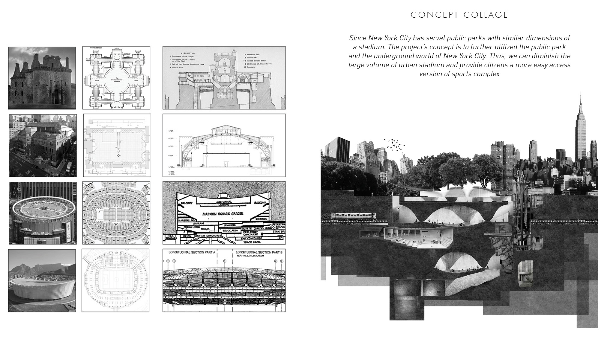
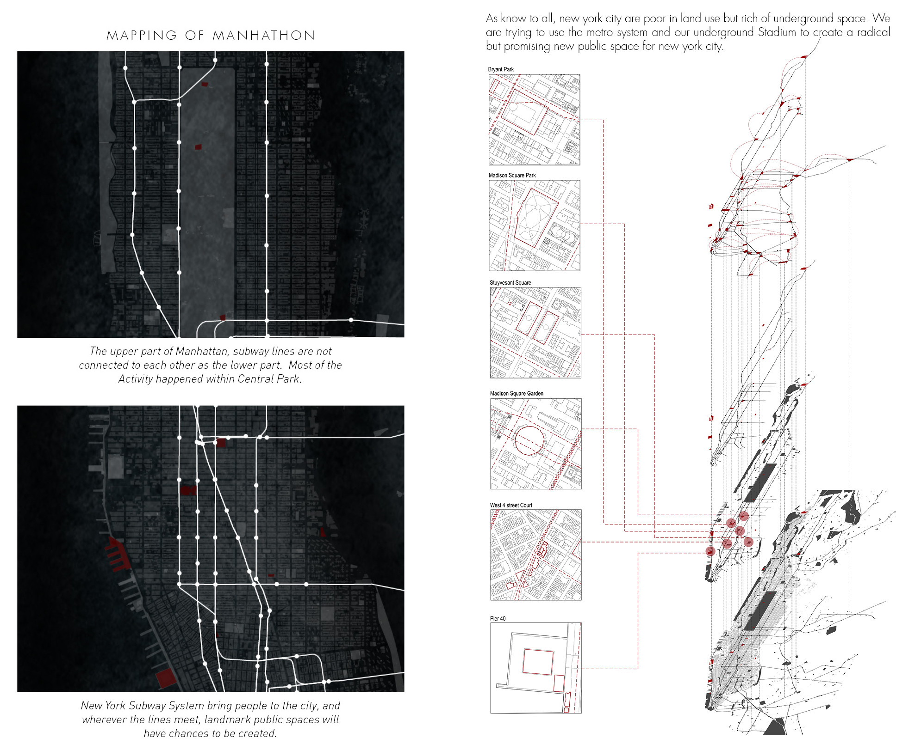

Subway Oriented Stadium Planning Strategy
The music piece Psappha was to honor the great aincient Greek poetess Sappho, whom the composer Iannis Xenakis credited for introducing the shift of rhythm and temple into the poem. Xenakis borrowed this change of rhythm into the drum solo. The piece is featured by its dramatic change of the rhythm between each section.Our project is based on section 6, which is unique because of the stable base drum beat composed with the changing temple of other instrument families.


Floor Plan
A-A Section